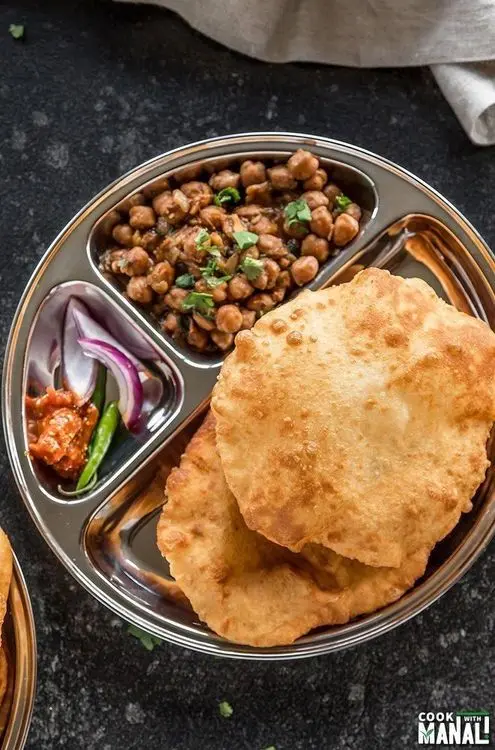

Welcome to my chole bhature recipes page

Description
This chole bhature recipe is a popular North Indian dish made with spicy chickpeas (chole) and deep-fried bread
(bhature). It's a hearty and satisfying meal, perfect for any time of the day.
Ingredients
- 2 cups chickpeas (soaked overnight)
- 1 large onion, finely chopped
- 2 tomatoes, pureed
- 2 green chilies, slit
- 1 tablespoon ginger-garlic paste
- 2 teaspoons chole masala
- 1/2 teaspoon turmeric powder
- Salt to taste
- Fresh coriander leaves for garnish
- For Bhature:
- 2 cups all-purpose flour
- 1/2 cup yogurt
- 1/2 teaspoon baking powder
- Salt to taste
- Water as needed
- Oil for deep frying
Steps
- In a pressure cooker, cook the soaked chickpeas with water until soft. Drain and set aside.
- In a pan, heat some oil and sauté the chopped onions until golden brown.
- Add the ginger-garlic paste and green chilies, and sauté for a minute.
- Stir in the tomato puree, chole masala, turmeric powder, and salt. Cook until the oil separates.
- Add the cooked chickpeas and some water to achieve the desired consistency. Simmer for 10 minutes.
- For the bhature dough, mix the flour, yogurt, baking powder, and salt. Knead into a soft dough, adding water
as needed. Let it rest for 30 minutes.
- Divide the dough into small balls and roll them out into circles.
- Heat oil in a deep pan and fry the rolled bhature until puffed and golden brown.
- Serve the hot chole with bhature, garnished with fresh coriander leaves.
Back to home